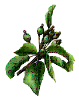

<!DOCTYPE HTML PUBLIC "-//W3C//DTD HTML 4.0 Transitional//EN">
<HTML>
<HEAD>
	<META HTTP-EQUIV="CONTENT-TYPE" CONTENT="text/html; charset=utf-8">
	<TITLE>BIJLAGE I bij het besluit d</TITLE>
	<META NAME="GENERATOR" CONTENT="LibreOffice 3.5  (Linux)">
	<META NAME="AUTHOR" CONTENT="Gort">
	<META NAME="CREATED" CONTENT="20110729;15040000">
	<META NAME="CHANGEDBY" CONTENT="Gort">
	<META NAME="CHANGED" CONTENT="20110729;15040000">
	<META NAME="Info 1" CONTENT="">
	<META NAME="Info 2" CONTENT="">
	<META NAME="Info 3" CONTENT="">
	<META NAME="Info 4" CONTENT="">
	<STYLE TYPE="text/css">
	<!--
		@page { size: 8.27in 11.69in; margin-right: 0.83in; margin-top: 0.98in; margin-bottom: 0.98in }
		P { margin-bottom: 0.08in; direction: ltr; color: #000000; widows: 2; orphans: 2 }
		P.western { font-family: "Arial", sans-serif; font-size: 11pt; so-language: nl-NL }
		P.cjk { font-family: "Times New Roman", serif; font-size: 11pt }
		P.ctl { font-family: "Arial", sans-serif; font-size: 12pt; so-language: ar-SA }
	-->
	</STYLE>
</HEAD>
<BODY LANG="en-US" TEXT="#000000" DIR="LTR">
<P LANG="nl-NL" CLASS="western" STYLE="margin-bottom: 0in"><B>BIJLAGE
</B><B>I</B> bij het besluit d.d. 27 juli 2011 tot wijziging van
de toelating van het middel Admire N, toelatingnummer 12945 N</P>
<P LANG="nl-NL" CLASS="western" STYLE="margin-bottom: 0in"><BR>
</P>
<P LANG="nl-NL" CLASS="western" STYLE="margin-bottom: 0in"><A NAME="wgga_gebruik1"></A>
Dit middel is uitsluitend bestemd voor niet-<SPAN LANG="">professioneel</SPAN>
gebruik</P>
<P LANG="nl-NL" STYLE="margin-bottom: 0in"><BR>
</P>
<P LANG="nl-NL" STYLE="margin-bottom: 0in"><BR>
</P>
<P LANG="nl-NL" CLASS="western" ALIGN=CENTER><I>A.</I></P>
<P LANG="nl-NL" CLASS="western" ALIGN=CENTER STYLE="margin-left: 0.25in">
<U>WETTELIJK GEBRUIKSVOORSCHRIFT</U></P>
<P LANG="nl-NL" CLASS="western" STYLE="margin-left: 0.25in"><BR><BR>
</P>
<P LANG="nl-NL" STYLE="margin-bottom: 0in"><FONT FACE="Arial, sans-serif"><FONT SIZE=2 STYLE="font-size: 11pt">Toegestaan
is uitsluitend het gebruik als insectenbestrijdingsmiddel:</FONT></FONT></P>
<OL>
	<LI VALUE=1><P LANG="nl-NL" STYLE="margin-bottom: 0in"><FONT FACE="Arial, sans-serif"><FONT SIZE=2 STYLE="font-size: 11pt">in
	siergewassen in de tuin, met dien verstande dat toepassing alleen is
	toegestaan na de bloei tot aan de winterrust. </FONT></FONT>
	</P>
	<LI><P LANG="nl-NL" STYLE="margin-bottom: 0in"><FONT FACE="Arial, sans-serif"><FONT SIZE=2 STYLE="font-size: 11pt">in
	appels en peren in de tuin of particuliere boomgaard, door middel
	van een gewasbehandeling met een maximum aantal behandelingen van
	totaal twee keer per seizoen, met uitzondering van de periode dat de
	bloemknoppen zichtbaar zijn (zie bijsluiter).</FONT></FONT></P>
</OL>
<P LANG="nl-NL" STYLE="margin-bottom: 0in"> 
</P>
<P LANG="nl-NL" CLASS="western" ALIGN=JUSTIFY>Gevaarlijk voor bijen
en hommels. Niet gebruiken op of in de buurt van bloeiende planten en
bloeiende onkruiden.</P>
<P LANG="nl-NL" ALIGN=JUSTIFY STYLE="margin-bottom: 0in"><BR>
</P>
<P LANG="nl-NL" ALIGN=JUSTIFY STYLE="margin-bottom: 0in"><FONT FACE="Arial, sans-serif"><FONT SIZE=2 STYLE="font-size: 11pt"><U>Veiligheidstermijn</U>:
<BR>De termijn tussen de laatste toepassing en de oogst mag niet
korter zijn dan: </FONT></FONT>
</P>
<P LANG="nl-NL" ALIGN=JUSTIFY STYLE="margin-bottom: 0in"><FONT FACE="Arial, sans-serif"><FONT SIZE=2 STYLE="font-size: 11pt"><U>2
weken</U> voor <U>appels en peren</U>. </FONT></FONT>
</P>
<P LANG="nl-NL" STYLE="margin-bottom: 0in"><BR>
</P>
<P LANG="nl-NL" STYLE="margin-bottom: 0in"><FONT FACE="Arial, sans-serif"><FONT SIZE=2 STYLE="font-size: 11pt">Het
middel is uitsluitend bestemd voor particulier gebruik.</FONT></FONT></P>
<P LANG="nl-NL" ALIGN=CENTER STYLE="margin-top: 0.19in; margin-bottom: 0.19in">
<FONT FACE="Arial, sans-serif"><FONT SIZE=2 STYLE="font-size: 11pt">B.<BR><U>GEBRUIKSAANWIJZING</U></FONT></FONT></P>
<P LANG="nl-NL" STYLE="margin-top: 0.19in; margin-bottom: 0.19in"><FONT FACE="Arial, sans-serif"><FONT SIZE=2 STYLE="font-size: 11pt"><B>Algemeen
</B></FONT></FONT>
</P>
<P LANG="nl-NL" STYLE="margin-top: 0.19in; margin-bottom: 0.19in"><FONT FACE="Arial, sans-serif"><FONT SIZE=2 STYLE="font-size: 11pt">Admire
N werkt tegen de meeste op sierplanten in huis en tuin voorkomende
zuigende insecten zoals bladluis, wolluis, buxusbladvlo en witte
vlieg. Het middel is op appel en peer in te zetten tegen diverse
luizen en tegen de appel- en perenzaagwesp. Voor deze toepassingen
geldt dat het middel moet worden aangebracht door middel van een
gewasbehandeling. </FONT></FONT>
</P>
<P LANG="nl-NL" STYLE="margin-bottom: 0in"><FONT FACE="Arial, sans-serif"><FONT SIZE=2 STYLE="font-size: 11pt">Attentie:</FONT></FONT></P>
<P LANG="nl-NL" STYLE="margin-bottom: 0in"><FONT FACE="Arial, sans-serif"><FONT SIZE=2 STYLE="font-size: 11pt">Bijen
kunnen actief vliegen op niet-bloeiende planten, bijvoorbeeld om door
luizen afgescheiden honingdauw te verzamelen. </FONT></FONT>
</P>
<P LANG="nl-NL" STYLE="margin-bottom: 0in"><BR>
</P>
<P LANG="nl-NL" STYLE="margin-bottom: 0in"><FONT FACE="Arial, sans-serif"><FONT SIZE=2 STYLE="font-size: 11pt"><U>Toepassingen
</U></FONT></FONT>
</P>
<P LANG="nl-NL" STYLE="margin-bottom: 0in"><BR>
</P>
<P LANG="nl-NL" STYLE="margin-bottom: 0in"><FONT FACE="Arial, sans-serif"><FONT SIZE=2 STYLE="font-size: 11pt"><U>Niet
bloeiende sierplanten of sierplanten na de bloei tot aan de
winterrust</U>, ter bestrijding van bladluis, wolluis en witte vlieg.
Zodra aantasting wordt waargenomen een behandeling uitvoeren. </FONT></FONT>
</P>
<P LANG="nl-NL" STYLE="margin-bottom: 0in"><BR>
</P>
<P LANG="nl-NL" STYLE="margin-bottom: 0in"><FONT FACE="Arial, sans-serif"><FONT SIZE=2 STYLE="font-size: 11pt"><U>Niet
bloeiende sierplanten of sierplanten na de bloei tot aan de
winterrust</U>, ter bestrijding van de buxusbladvlo. Een
gewasbehandeling uitvoeren zodra de larven uit de wintereieren komen.</FONT></FONT></P>
<P LANG="nl-NL" STYLE="margin-bottom: 0in; page-break-before: always">
<BR>
</P>
<P LANG="nl-NL" STYLE="margin-bottom: 0in"><FONT FACE="Arial, sans-serif"><FONT SIZE=2 STYLE="font-size: 11pt">Attentie</FONT></FONT></P>
<P LANG="nl-NL" STYLE="margin-bottom: 0in"><FONT FACE="Arial, sans-serif"><FONT SIZE=2 STYLE="font-size: 11pt">Langdurig
gebruik van een en hetzelfde middel moet voorkomen worden omdat dit
de kans op resistentieontwikkeling kan verhogen. Het middel mag
maximaal 2 keer per seizoen worden toegepast.</FONT></FONT></P>
<P LANG="nl-NL" STYLE="margin-bottom: 0in"><BR>
</P>
<P LANG="nl-NL" STYLE="margin-bottom: 0in"><FONT FACE="Arial, sans-serif"><FONT SIZE=2 STYLE="font-size: 11pt"><U>Appel</U>,
ter bestrijding van diverse luizen (roze appelluis, groene
appeltakluis, fluitekruidluis, bloedvlekkenluis, appel-grasluis). Bij
aanwezigheid van de luis een gewasbehandeling uitvoeren.</FONT></FONT></P>
<P LANG="nl-NL" STYLE="margin-bottom: 0in"><BR>
</P>
<P LANG="nl-NL" CLASS="western" ALIGN=JUSTIFY STYLE="margin-bottom: 0in">
<U>Appel</U>, ter bestrijding van de appelzaagwesp.</P>
<P LANG="nl-NL" CLASS="western" ALIGN=JUSTIFY STYLE="margin-bottom: 0in">
Bij het vinden van de prikken van de appelzaagwesp gedurende de bloei
van appel, direct na de bloei een gewasbehandeling uitvoeren.</P>
<P LANG="nl-NL" STYLE="margin-bottom: 0in"><BR>
</P>
<P LANG="nl-NL" STYLE="margin-bottom: 0in"><FONT FACE="Arial, sans-serif"><FONT SIZE=2 STYLE="font-size: 11pt"><U>Peer</U>,
ter bestrijding van diverse luizen (roze perenluis, vouwgalluis,
zwarte perenluis, zwarte bonenluis). Bij aanwezigheid van de luis een
gewasbehandeling uitvoeren.</FONT></FONT></P>
<P LANG="nl-NL" CLASS="western" ALIGN=JUSTIFY STYLE="margin-bottom: 0in">
<BR>
</P>
<P LANG="nl-NL" CLASS="western" ALIGN=JUSTIFY STYLE="margin-bottom: 0in">
<U>Peer</U>, ter bestrijding van de perenzaagwesp. 
</P>
<P LANG="nl-NL" CLASS="western" ALIGN=JUSTIFY STYLE="margin-bottom: 0in">
Bij het vinden van de prikken van de perenzaagwesp gedurende de bloei
van peer, direct na de bloei een gewasbehandeling uitvoeren.</P>
<P LANG="nl-NL" STYLE="margin-bottom: 0in"><BR>
</P>
<P LANG="nl-NL" STYLE="margin-bottom: 0in"><FONT FACE="Arial, sans-serif"><FONT SIZE=2 STYLE="font-size: 11pt"><U>Appel
en peer</U>, ter bestrijding van de groene appelwants. Bij
aanwezigheid van larven van de groene appelwants een gewasbehandeling
uitvoeren.</FONT></FONT></P>
<P LANG="nl-NL" STYLE="margin-bottom: 0in"><BR>
</P>
<P LANG="nl-NL" STYLE="margin-bottom: 0in"><FONT FACE="Arial, sans-serif"><FONT SIZE=2 STYLE="font-size: 11pt"><B>Gewasbehandeling
</B></FONT></FONT>
</P>
<P LANG="nl-NL" STYLE="margin-bottom: 0in"><FONT FACE="Arial, sans-serif"><FONT SIZE=2 STYLE="font-size: 11pt">Dosering:
0,15%, per liter water 1,5 gram Admire N gebruiken. </FONT></FONT>
</P>
<P LANG="nl-NL" STYLE="margin-bottom: 0in"><FONT FACE="Arial, sans-serif"><FONT SIZE=2 STYLE="font-size: 11pt">De
planten zodanig bespuiten dat zowel de boven- als de onderzijde van
de bladeren goed wordt geraakt. Het kan nodig zijn de behandeling te
herhalen, wanneer er opnieuw aantasting optreedt. Maximaal 150 ml per
vierkante meter toepassen.</FONT></FONT></P>
<P LANG="nl-NL" STYLE="margin-bottom: 0in"><BR>
</P>
<P LANG="nl-NL" STYLE="margin-bottom: 0in"><FONT FACE="Arial, sans-serif"><FONT SIZE=2 STYLE="font-size: 11pt">Aanmaken
van de oplossing:</FONT></FONT></P>
<P LANG="nl-NL" STYLE="margin-bottom: 0in"><FONT FACE="Arial, sans-serif"><FONT SIZE=2 STYLE="font-size: 11pt">Neem
de gewenste hoeveelheid water en voeg daar de benodigde hoeveelheid
Admire N aan toe. Gebruik geen ijskoud water. Roer dit goed door en
laat de oplossing enkele minuten staan. Roer vervolgens nog een keer
goed. De oplossing is nu klaar voor gebruik. </FONT></FONT>
</P>
<P LANG="nl-NL" STYLE="margin-bottom: 0in"><BR>
</P>
<P LANG="nl-NL" ALIGN=JUSTIFY STYLE="margin-bottom: 0in; page-break-before: always">
<FONT FACE="Arial, sans-serif"><FONT SIZE=3><B>Bijsluiter:
Ontwikkelstadia bij appel en peer.</B></FONT></FONT></P>
<P LANG="nl-NL" ALIGN=JUSTIFY STYLE="margin-bottom: 0in"><BR>
</P>
<P LANG="nl-NL" ALIGN=JUSTIFY STYLE="margin-bottom: 0in"><FONT FACE="Arial, sans-serif"><FONT SIZE=3>Zoals
omschreven in het wettelijk gebruiksvoorschrift is toepassing op
appel of peer alleen toegestaan in de periode dat de bloemknoppen
niet zichtbaar zijn. Om te verduidelijken wanneer het middel wel en
niet kan worden toegepast, volgt hier een overzicht van verschillende
ontwikkelstadia.</FONT></FONT></P>
<P LANG="nl-NL" ALIGN=JUSTIFY STYLE="margin-bottom: 0in"><BR>
</P>
<P LANG="nl-NL" ALIGN=JUSTIFY STYLE="margin-bottom: 0in"><FONT FACE="Arial, sans-serif"><FONT SIZE=3><B>1.
Het groene blad knop stadium. </B></FONT></FONT>
</P>
<P LANG="nl-NL" ALIGN=JUSTIFY STYLE="margin-bottom: 0in"><FONT FACE="Arial, sans-serif"><FONT SIZE=3>Moment
waarop de appel of perenboom na de winter uit de vegetatie rust komt.
Op dit moment kan Admire N worden ingezet.</FONT></FONT></P>
<P LANG="nl-NL" ALIGN=JUSTIFY STYLE="margin-bottom: 0in"><BR>
</P>
<P LANG="nl-NL" ALIGN=JUSTIFY STYLE="margin-bottom: 0in"><BR>
</P>
<P LANG="nl-NL" ALIGN=JUSTIFY STYLE="margin-bottom: 0in"><BR>
</P>
<P LANG="nl-NL" ALIGN=JUSTIFY STYLE="margin-bottom: 0in"><BR>
</P>
<P LANG="nl-NL" ALIGN=JUSTIFY STYLE="margin-bottom: 0in"><BR>
</P>
<P LANG="nl-NL" ALIGN=JUSTIFY STYLE="margin-bottom: 0in"><BR>
</P>
<P LANG="nl-NL" ALIGN=JUSTIFY STYLE="margin-bottom: 0in"><FONT FACE="Arial, sans-serif"><FONT SIZE=3><B>2.
Het muizenoorstadium. </B></FONT></FONT>
</P>
<P LANG="nl-NL" ALIGN=JUSTIFY STYLE="margin-bottom: 0in"><FONT FACE="Arial, sans-serif"><FONT SIZE=2 STYLE="font-size: 11pt">Twee
blaadjes zijn al iets verder uitgegroeid. Dit is het laatste stadium
voor de bloei waarop Admire N kan worden ingezet.</FONT></FONT></P>
<P LANG="nl-NL" ALIGN=JUSTIFY STYLE="margin-bottom: 0in"><BR>
</P>
<P LANG="nl-NL" ALIGN=JUSTIFY STYLE="margin-bottom: 0in"><BR>
</P>
<P LANG="nl-NL" ALIGN=JUSTIFY STYLE="margin-top: 0.19in; margin-bottom: 0.19in">
<BR><BR>
</P>
<P LANG="nl-NL" ALIGN=JUSTIFY STYLE="margin-top: 0.19in; margin-bottom: 0.19in">
<BR><BR>
</P>
<P LANG="nl-NL" ALIGN=JUSTIFY STYLE="margin-left: 0.98in; margin-top: 0.19in; margin-bottom: 0.19in">
<FONT FACE="Arial, sans-serif"><FONT SIZE=3><B>3. Stadium waarop
bloemknopjes zichtbaar worden.</B> In dit stadium Admire N niet
toepassen. </FONT></FONT>
</P>
<P LANG="nl-NL" ALIGN=JUSTIFY STYLE="margin-top: 0.19in; margin-bottom: 0.19in">
<BR><BR>
</P>
<P LANG="nl-NL" ALIGN=JUSTIFY STYLE="margin-top: 0.19in; margin-bottom: 0.19in">
<BR><BR>
</P>
<P LANG="nl-NL" ALIGN=JUSTIFY STYLE="margin-top: 0.19in; margin-bottom: 0.19in">
<FONT FACE="Arial, sans-serif"><FONT SIZE=3><B>4.
Einde van de bloei.</B> Alle bloemblaadjes zijn eraf gevallen. Na dit
stadium mag het middel weer worden ingezet.  </FONT></FONT>
</P>
<P LANG="nl-NL" ALIGN=JUSTIFY STYLE="margin-top: 0.19in; margin-bottom: 0.19in">
<BR><BR>
</P>
<P LANG="nl-NL" ALIGN=JUSTIFY STYLE="margin-top: 0.19in; margin-bottom: 0.19in">
<BR><BR>
</P>
<P LANG="nl-NL" ALIGN=JUSTIFY STYLE="margin-top: 0.19in; margin-bottom: 0.19in">
<BR><BR>
</P>
<P LANG="nl-NL" ALIGN=JUSTIFY STYLE="margin-top: 0.19in; margin-bottom: 0.19in">
<FONT FACE="Arial, sans-serif"><FONT SIZE=3><B>5. Periode na de
bloei</B>. De ontwikkeling van de vrucht is ingezet. De nu nog kleine
vruchtbeginsels zullen ontwikkelen tot appels of peren. Admire N kan
worden ingezet.</FONT></FONT></P>
<P LANG="nl-NL" STYLE="margin-bottom: 0in"><BR>
</P>
<P LANG="nl-NL" CLASS="western" STYLE="margin-bottom: 0in"><BR>
</P>
</BODY>
</HTML>